Я хотел понять, кому в России вообще нужно приложение для ухода за парками. Оказалось, похожий продукт уже есть. И его пользователи в отзывах прямо написали, что он не работает. Я взял эти жалобы и сделал ответ на каждую.
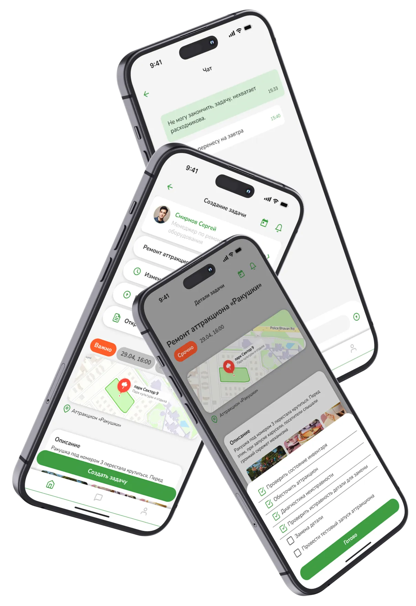
Я ходил по паркам Петербурга и смотрел, как там устроен уход. Сколько людей работает, что они делают, кто с кем связан. Вывод: приложение нужно не каждому парку.
Я прошёлся по рынку и нашёл три вида решений. Ни одно не закрывает задачу так, как нужно парку.
Рынок не пустой — тут есть госсервис, который формально закрывает парки. Но по отзывам он сломан ровно там, где парку важно: фото не грузятся, геолокация зависает, задачи путаются. Место занято, но занято плохо.
Самое ценное, что я нашёл, — отзывы живых пользователей этого продукта. Люди уже попробовали похожую механику и сказали, что не работает.
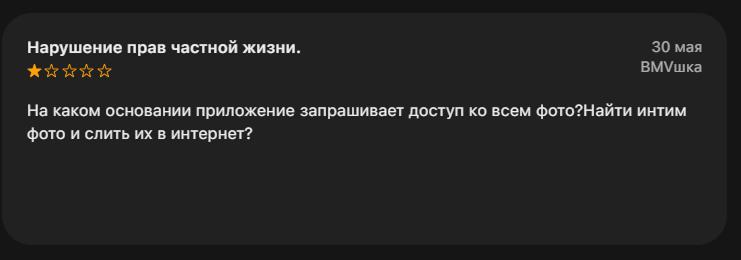
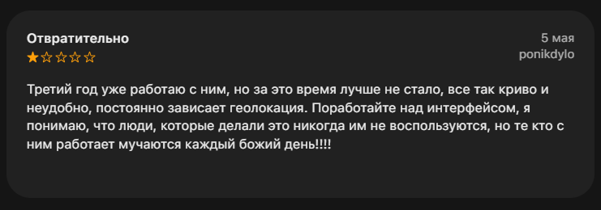
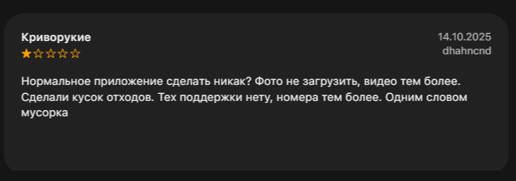
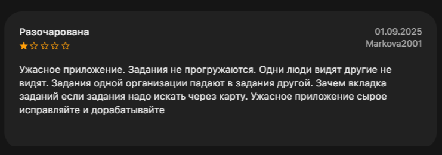
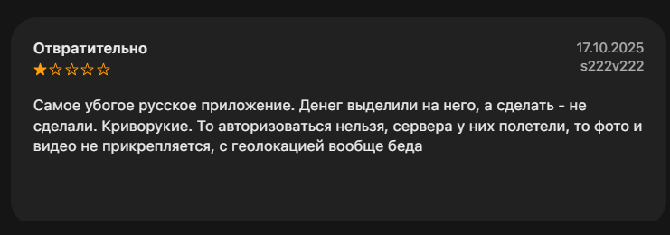
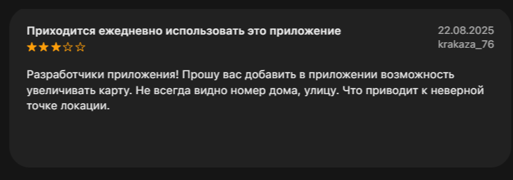
Люди, которые работают с продуктом каждый день, сами написали список требований. Моя задача — не гадать, а закрыть эти шесть пунктов в своём MVP и не наступить на те же грабли.
Каждую жалобу из отзывов я превратил в конкретное решение. Это не «мне так кажется лучше» — это ответ на реальную, записанную боль.
| Что говорят пользователи | Что я сделал | Статус |
|---|---|---|
| Фото не грузятся, загрузка ломается | Фото уходит в офлайн-очередь: сохраняется на телефоне, улетает на сервер, когда появилась сеть | В MVP |
| «Авторизоваться нельзя», сервера падают | Вход по PIN, проверка на телефоне — работает без сети и без сервера | В MVP |
| Геолокация зависает, точка не та | Карта объекта + геометка + можно поправить точку рукой | В MVP |
| Задачи не синхронятся, путаются между организациями | Офлайн-first с явной очередью синхронизации; задачи привязаны к своему парку | Критично |
| «Криворукие» — работать в этом каждый день неудобно | Крупные кнопки 48 pt, минимум ручного ввода, всё понятно с первого взгляда | В MVP |
| Камеру открывать три раза на три фото | Один вход в камеру → снимаешь «до» и «после» подряд | MVP light |
Каждую гипотезу я помечаю честно: что подтверждено отзывами, а что я ставлю без данных.
У продукта три сценария. Ниже — флоу целиком, ключевые решения и экраны под те боли, что я вытащил из отзывов.
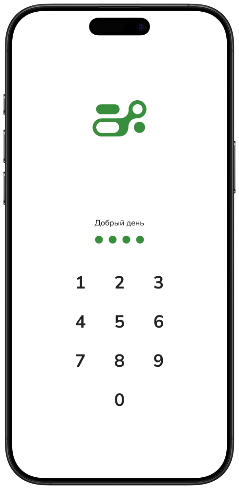
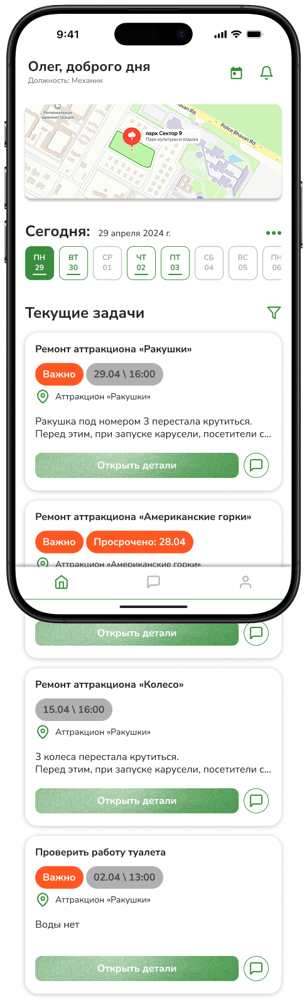
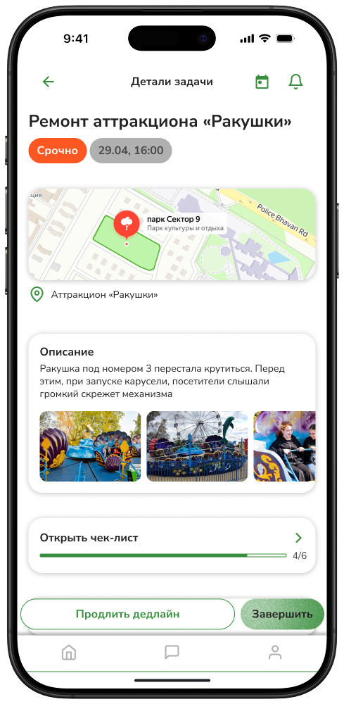
Админские сценарии и сейчас работают — просто медленнее. У рабочего потери жёстче: нет связи, фото не грузятся, задачи путаются. Ниже — экраны под эти точки.
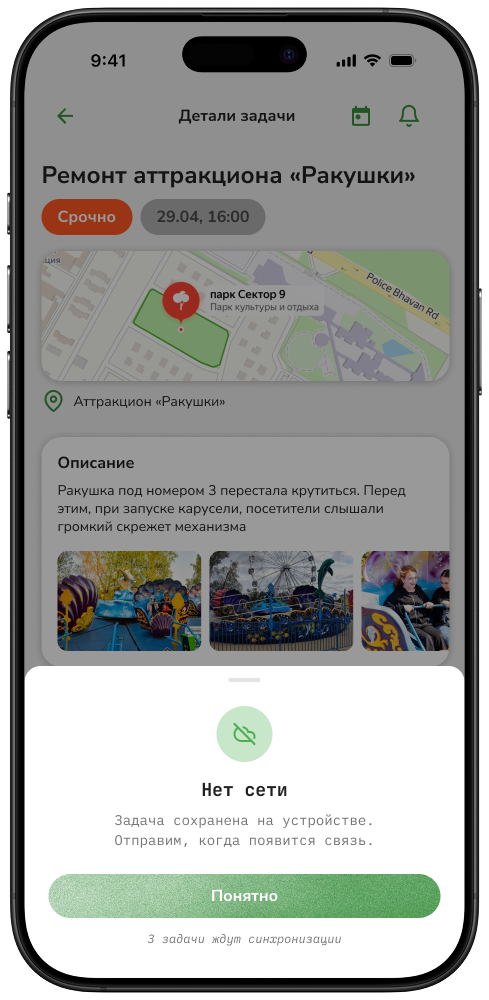
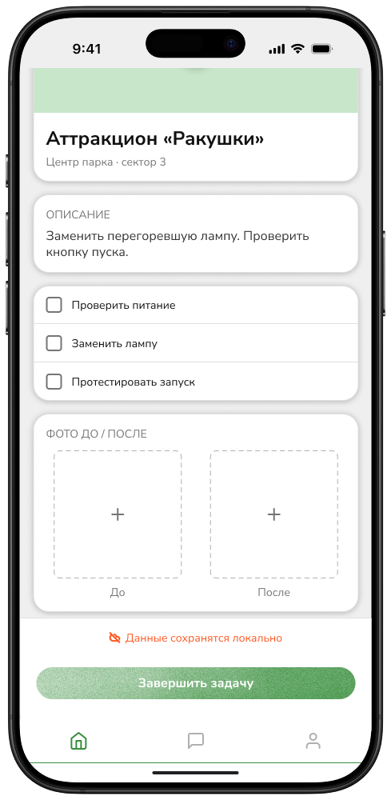
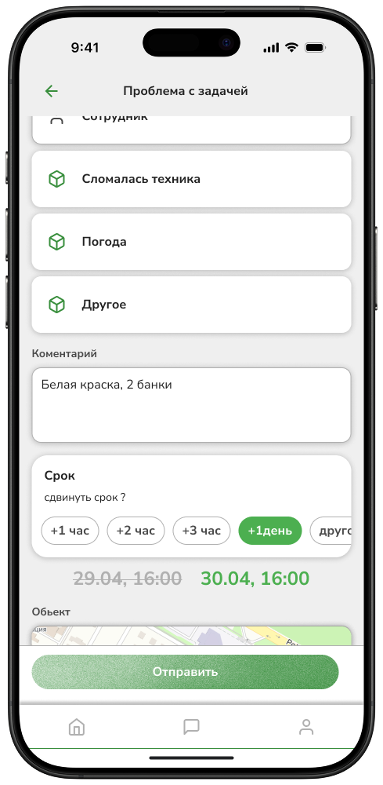
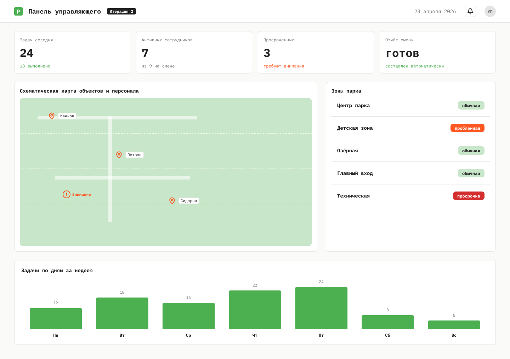
| Фича | Какую жалобу закрывает | Сложность | Решение |
|---|---|---|---|
| Список задач + карта | «Задания надо искать через карту» | Средняя | В MVP |
| Фото до/после | «Фото не загрузить, видео тем более» | Низкая | В MVP |
| Офлайн-режим | «Задания не прогружаются», «фото не прикрепляется» | Высокая | Критично |
| Вход по PIN | «Авторизоваться нельзя, сервера у них полетели» | Низкая | В MVP |
| Правка геометки рукой | «Точка неверная», «карту не увеличить» | Средняя | В MVP |
| Серийная съёмка | «Камеру открывать три раза» | Средняя | MVP light |
| Запрос материалов / помощи | Простой на походах к прорабу (наблюдение) | Средняя | MVP light |
| Дашборд управляющего | Ручной отчёт в конце смены | Высокая | Итерация 2 |
| Геймификация / ачивки | Не подтверждена ни отзывами, ни наблюдением | Средняя | После теста |
Первое.Фейковые интервью и цитаты портят кейс сильнее чем их отсутствие. Дизайнера определяет не гора артефактов, а то, понимает ли он, чего ему не хватает.
Второе. Сегментация — такое же дизайнерское решение, как экран. Вывод «малым паркам приложение не нужно» сильнее, чем продукт «для всех парков России». Сузить — это тоже работа.
Третье. «Пустой рынок» и «рынок, где всё занято плохо» — это два разных рынка. Пустой — подозрительный (почему никто не занял?). Занятый плохо — понятный: есть продукт, есть недовольные люди, есть что исправить.
Чтобы кейс перестал быть просто «наблюдение + отзывы» и стал нормальным продуктовым исследованием, нужно закрыть конкретные пробелы.